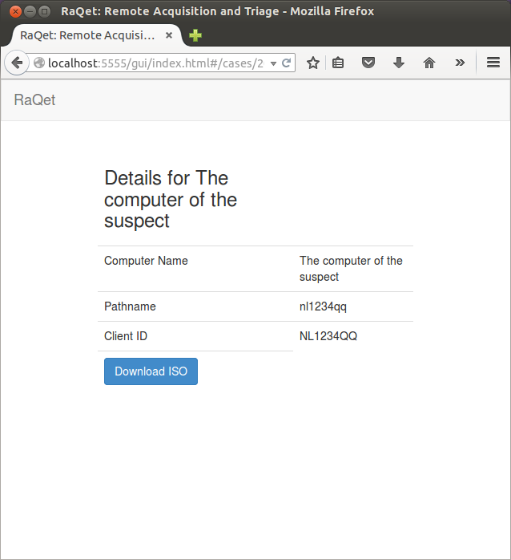

Welcome to the Raqet project.
This website documents the Remote Acquisition and Triage tool. This tool allows to triage a disk of a remote computer (client) that is restarted with a purposely built forensic operating system. It is a remote forensic disk imaging solution, although the term imaging is misleading in this case. While performing this investigation a server side sparse evidence file is written. This work process is against most forensic best practices that are documented as most describe investigation starts by making a forensic copy of the full disk.
The Raqet project deliberately breaks with this practice. It is the authors opinion that current disk sizes do no longer make it practical nor proportional to always make a full bit-copy. E.g. to save the forensic relevant data of a hacked web server one could argue that the web server log files are sufficient. Especially as most of the web server content is actually from the victim and not from the attacker.
The picture above describes the flow of information that is implemented in this project. The computer that is investigated is positioned on the left, the server is on the right. It is booted using a custom os, the client that will connect over an IP-VPN to the server. The client-side os is generated with unique information for that client by the server. The user needs to setup a case on the server, describe computer that is about to be investigated and create a bootable CD, disk image or PXE configuration for this computer. As this OS is very small (about 20Mb) it is easy to send it to a remote location. As the OS contains unique information, the server can identify the OS when it is booted. It can link that instance of the OS with the configured case and computer.
The server has by default a webserver for basic case management on port 5556 and a webserver for the clients on port 5555. When accessing the server website it shows the current configured cases.
WARNING: the pictures show the an older version where case management shared the port with the client. Replace 5555 with 5556 and note the /gui/ part
The case defaultcase is created to handle the situation where users use the same OS multiple times. The client-OS calculates a fingerprint of the hardware and the server uses it to distinguish this unintended and undesirable situation.
The normal process is to start by making a new case. The case is given a normal name which can be descriptive and contain any characters, but also a path. The path is not allowed to contain any special characters as it will be used as a path in the CIFS export of the data and also in urls of the restfull API of the server.
After adding a case (for example the case Huge case in 2015) it will be added on the main screen of the webinterface. The details of the case can be viewed.
Within the case a computer can be added. (Field shows wrong captions, sorry). One can set a free format computername, the computername as it will be used as URL and a unique client-id that will be used to link the generated OS to the administrative client.
The case information will now show both the case details as well as the configured computers.
When viewing the details of the configured computer a download button is presented that allows the investigator to download a bootable ISO image. This image is also usable as harddisk image.

So the user downloads the ISO image.
The ISO image is started on the to be acquired system. This assumes the user to have physical control of the system. This control is out of scope of the project bus is assumed to be based on legal warrants that will be required in (almost?) all jurisdictions. When using this tool as a corporate investigator in your own corporate environment things will be legally easier compared to an international warrant issued from one jurisdiction to the other. Point being: this is not hacking nor will this not automatically boot. It requires coordinated cooperation with the party that physically owns the machine.
When the client has booted it will register at the server. The server will identify the client based on the number embedded in the OS and link the clients disks to a virtual file system that is exported using CIFS. To access the virtual filesystem it needs to be mounted using windows or linux.
The virtual filesystem will show a directory scheme consisting of the name of the case and the name of the computer. Within this directory several files appear, some of which are physical (stored in /var/raqet) and some are virtual. The virtual file shows as a raw image with the size and content of the physical disk of the remote computer. The content is however not physically stored on the server but retreived on the fly.
When data is read from the virtual file, it is copied and cached on the physical local filesystem. A bitmap is used to register which 64k blocks are retrieved and present and thus are stored locally. E.g. doing a sleuthkit mmls on the virtual file will lead to the storage of just the partition table. A sleuthkit fls -r on a partition will store most of the filesystem metadata etc. The local file will contain just the retrieved data. This allows to selectively acquire content, but still maintain benefits like filenames of deleted files, all timestamps. Order of inodes etc. etc.
A simple triage scenario would just retreive /var/log of the remote computers and filesystem metadata. This could be combined with triage based on filesystem metadata (timestamps, sizes, kerwords in filenames).
The tools is not specifically intended for full keyword or file hash based triage of the remote disk content, as this will void the benefits of acquiring just a partial image.
Build
Both client and server have the ability to create a debian source package. This can be built using the pbuilder framework and will result in installable debian packages.
Prebuild packages for Ubuntu 14.04 can be downloaded at the release page
The easiest way to build from source using pbuilder is to clone both repositories.
sudo apt-get install git-core pbuilder pbuilder --create git clone https://github.com/raqet/acquisition-server.git cd acquisition-server/ ./build_src cd .. pbuilder --build raqetserver_0.1.dsc git clone https://github.com/raqet/acquisition-client.git cd acquisition-client make debiansourcepkg cd .. pbuilder --build raqetclient_0.1-1.dsc
The debian packages will be placed in /var/cache/pbuilder/result/
To build from source without the pbuilder framework you first need to install the build dependencies:
- debhelper
- git-core
- build-essential
- libssl-dev
- libncurses5-dev
- unzip
- python
- gawk
- wget
- subversion
- whois
- syslinux
- syslinux-common
- openjdk-7-jdk
- fastjar
- openjdk-7-doc
- ant
- libiscsi1i (>=1.15.1-1)
sudo apt-get install debhelper git-core build-essential libssl-dev libncurses5-dev \
unzip python gawk wget subversion whois syslinux \
syslinux-common openjdk-7-jdk fastjar openjdk-7-doc ant
wget https://github.com/raqet/acquisition-server/releases/download/v0.1/libiscsi1_1.15.1-1_amd64.deb
wget https://github.com/raqet/acquisition-server/releases/download/v0.1/libiscsi-dev_1.15.1-1_amd64.deb
wget https://github.com/raqet/acquisition-server/releases/download/v0.1/libiscsi-bin_1.15.1-1_amd64.deb
sudo dpkg -i libiscsi1_1.15.1-1_amd64.deb
sudo dpkg -i libiscsi-dev_1.15.1-1_amd64.deb
sudo dpkg -i libiscsi-bin_1.15.1-1_amd64.deb
git clone https://github.com/raqet/acquisition-server.git
cd acquisition-server/
ant
cd ..
git clone https://github.com/raqet/acquisition-client.git
cd acquisition-client
make
cd ..
As builing the client compiles openwrt from source it will take long before it
is finished.
Please note the sepetate page on testing.
Feel free to ask for help at info @ raqet.org
Disclaimer
The project is a proof of concept. It is intended to show the opportunities, risks and performance of an alternative acquisition process.
Authors and Contributors
The tool is written by the Netherlands Forensic Institute and is available for anyone that is interested. The prime author is R. Schramp (@schramp).